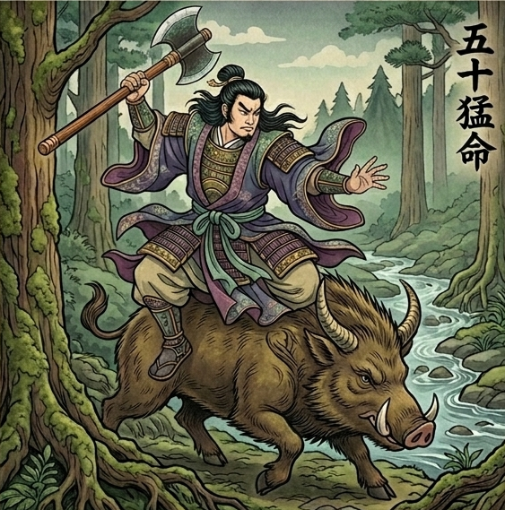

香様は本来
まっすぐに根を張って
進んでいける方です。
一度「これだ」と決めた道は
少々のことでは折れない。
自分の芯を持って
人を引っ張っていける。
そんな強さをお持ちです。
だからこそ
納得できないまま
進むことだけは
どうしてもできない。
芯を曲げてまで動くくらいなら
その場に立ち止まってしまう。
それなのに
なぜ今、この先を選ぶ
その一歩だけは
こんなに足が止まってしまうのか。
香様には
自分の感性や才能を
大切にしたいという
強い想いがあります。
「なんでもいいから」では
動けない。
自分の心が本当に動くものでないと、
一歩を踏み出せない。
他の人なら妥協できる場面でも
香様にとっては
その妥協が
自分を裏切ることのように
感じられてしまう。
だから今
「まっすぐ進みたい自分」と
「納得できるまで動けない自分」が
香様の中でぶつかって
答えを出させてくれないんです。
でも、大丈夫です。
その答えの出し方を
あなたを守る神様が
ちゃんと視せてくれています。
あなたを守っているのは
五十猛命(いそたけるのみこと)。
木々を植え
国土を緑で満たした神様です。

使命感が強く
誰かのために動くことで
大きな力が出る。
そんな力を持つ神様の
加護を受けているので
香様はこれまでも
人生の大事な場面で
自分の芯を曲げずに
歩いてこられたはずです。
五十猛命が視せてくれたのは
あなたの足元の土を
整え直している姿。
今この時間は
進めず立ち止まって
いるのではなく
五十猛命が
あなたにとっての
「本物」の場所に
根を張れるよう
土を整えている
かけがえのない時間。
あなたが
これまで自分の芯を
曲げずに生きてこられたから
今、あなたは
自分らしい道を
選び直せる場所まで
辿り着いていらっしゃいます。
ここは
人生でそう何度も訪れない
大きな節目。
その土づくりが終わり
あなたの毎日に
安心できる実りが
流れ込むのは
いつなのか。
この先の仕事が
あなたを
どこへ連れていくのか。
あなたを本当に大切にする
ご縁が
そばに来るのは
いつなのか。
私には、視えています。
ただ、これは
守護神からお預かりしている
香様のこれからを動かす
大切な言葉です。
本式守護霊視鑑定の場で
丁寧にお伝えさせて
いただきますね。
香様の中で起きている
このぶつかりは
時間が経てば自然に
片付くもの
ではありません。
方向が定まらないまま
季節をいくつも越えた時。
その時のあなたが
「自分の道を選べた自分」で
いられるか
「結局、動けなかった自分」で
いるか。
その差は、今この瞬間に
香様が「自分の状態を
正しく知るか」で
決まります。
本式守護鑑定で
香様にお渡しするのは
香様の毎日に
安心できるお金と
実りが流れ込むのは
いつなのか。
その時期を丁寧に
お伝えします。
入っては出ていく流れを
香様の手元に
しっかり留めるために
何を整えればいいのか。
具体的にお伝えします。
香様の中に本来ある
まっすぐ根を張る力を
これからの仕事の中で
どう使えばいいのか。
お伝えします。
今日から香様にできる
守護を高める方法を
お渡しします。
香様ご自身の手で
未来を選び取るための
鑑定です。
その一歩を
ここから踏み出して
ください。
今、香様のために
運命の扉は
最も大きく開かれています。
この巡り合わせは
残念ながら
永遠ではありません。
私からのこのお手紙を
受け取ってから
24時間以内に
一歩踏み出すと
止まっていた運命は
最もなめらかに
動き始めます。
ご自身の手で
最高の未来を
選び取りたいと
心から願う香様へ。
通常20,000円のところ
今回に限り
特別価格9,800円で
本式守護霊視鑑定を
行います。
1日限定3名までしか
お受けできません
リンク先が表示されない場合
本日分は締切ですので
ご了承ください。
お申し込み後、
購入時のお名前をお知らせください。
1日以内に、
あなただけの鑑定書をお届けします。
香様の物語が
香様らしい結末を
迎えることを
私は守護の声を通して
すでに知っています。
ご縁に
心から感謝を込めて。